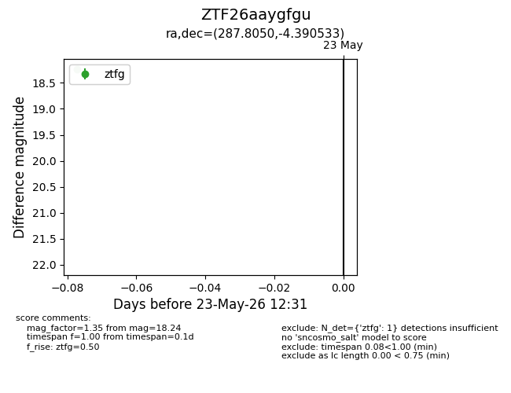
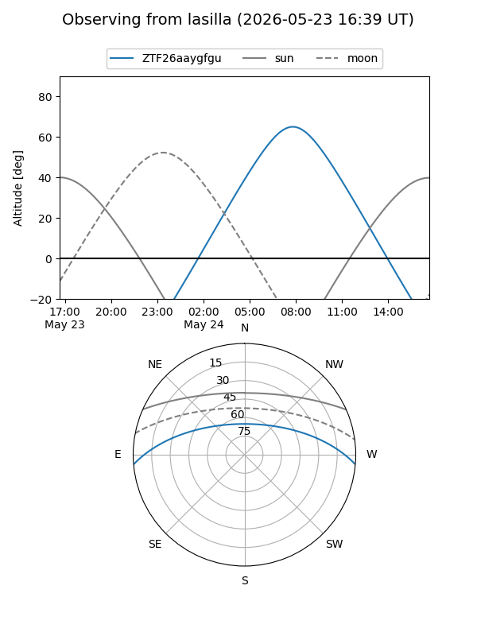
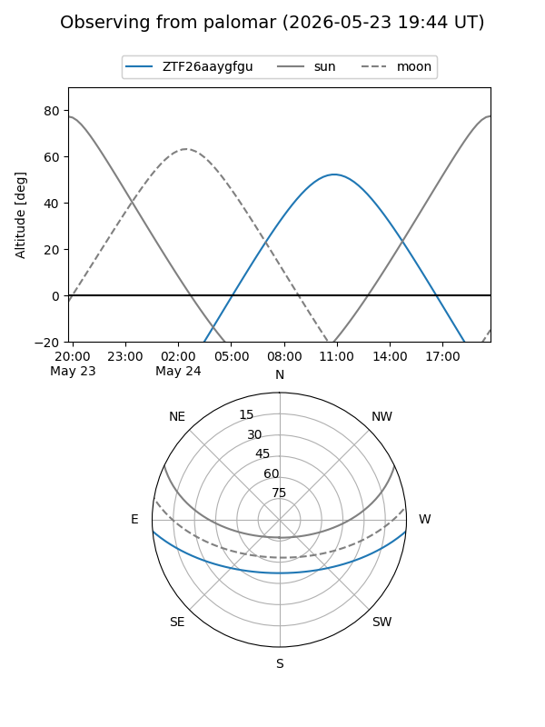

ZTF26aaygfgu
Target ZTF26aaygfgu at 2026-05-23 12:33
Aliases and brokers:
lsst-FINK: link
lsst-Lasair: link
lsst-ALeRCE: link
ztf-FINK: link
ztf-Lasair: link
ztf-ALeRCE: link
alt names
ZTF26aaygfgu (ztf,fink_ztf)
Coordinates:
equatorial (ra, dec) = 287.8050,-4.39053
equatorial (HMS+DMS) = 19:11:13.20,-04:23:25.92
galactic (l, b) = (31.2633,-6.39641)
Flags:
Photometry:
last ztfg=18.24
1 ztfg detections
Lightcurve

Visibility


Additional plots